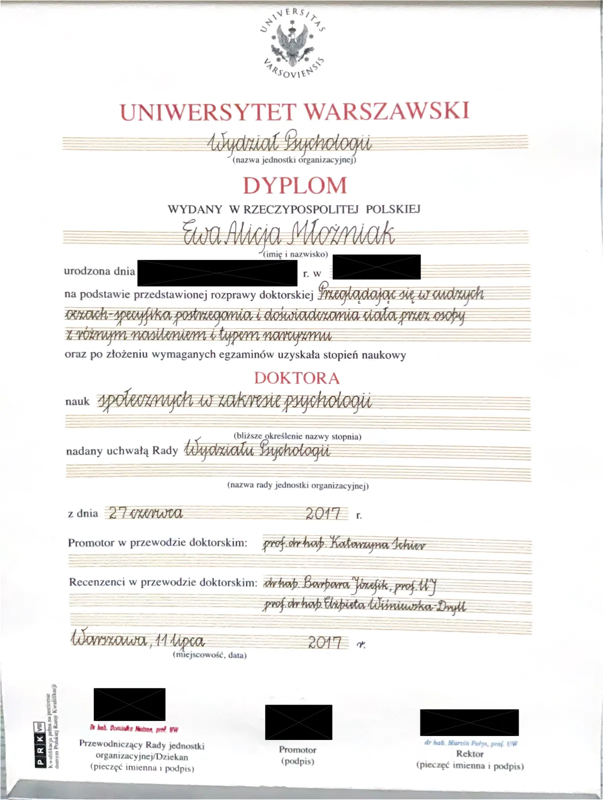
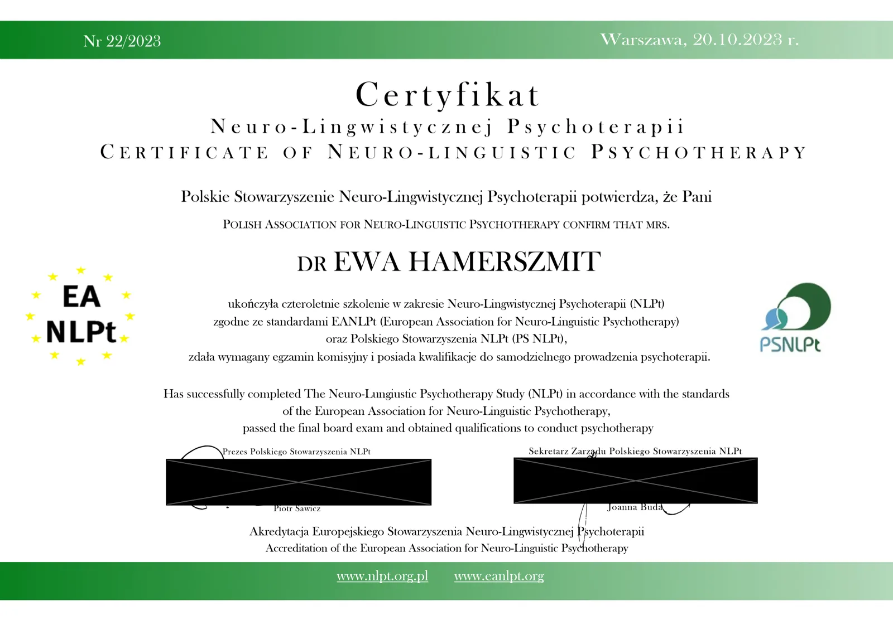
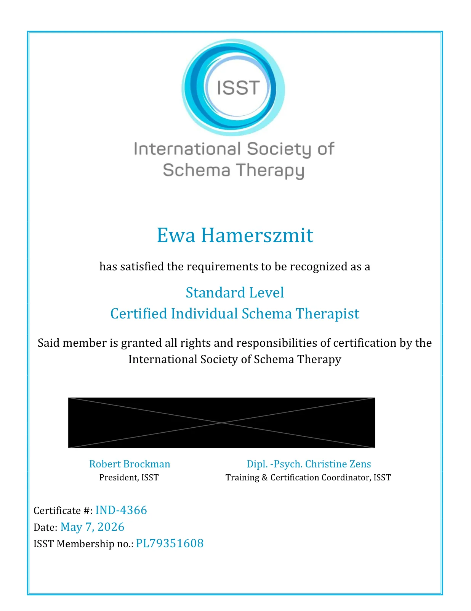

Kwalifikacje: dr Ewa Hamerszmit, psycholog i psychoterapeutka
WYKSZTAŁCENIE
Psychologia, doktorat i całościowe szkolenia psychoterapeutyczne w dwóch nurtach.
Ukończyłam studia psychologiczne na Uniwersytecie Warszawskim w ramach Międzywydziałowych Indywidualnych Studiów Humanistycznych i otrzymałam dyplom magistra psychologii w 2011 roku. Następnie ukończyłam studia doktoranckie i w 2017 roku po udanej obronie rozprawy doktorskiej pt. Przeglądając się w cudzych oczach – specyfika postrzegania i doświadczania ciała przez osoby z różnym nasileniem i typem narcyzmu uzyskałam tytuł doktora nauk społecznych.
Ukończyłam 4-letnie szkolenie w Polskim Instytucie NLP, obejmujące podstawowe i zaawansowane metody pracy w psychoterapii neurolingwistycznej, a także wiedzę o diagnozie i mechanizmach powstawania zaburzeń psychicznych oraz umiejętności budowania dobrej relacji z Klientami. Odbyłam wymaganą terapię własną (ponad dwuletnią) oraz prowadziłam psychoterapię, pozostając pod stałą superwizją moich nauczycieli. Odbyłam również obowiązkowe praktyki w szpitalu Wolskim oraz w Wojskowym Instytucie Medycznym w Warszawie. Domknięciem tego etapu procesu szkoleniowego było przystąpienie do egzaminu w Polskim Stowarzyszeniu NLPt, po którego zdaniu uzyskałam uprawnienia psychoterapeutki.
Posiadam certyfikat psychoterapeuty neurolingwistycznego (nr 22/2023) oraz certyfikat terapeutki schematu (nr IND-4366). Obecnie oczekuję również na certyfikat wydawany przez Polską Radę Psychoterapii, która jest niezależnym stowarzyszeniem, potwierdzającym kompetencje psychoterapeutów szkolących się w różnych nurtach i w różnym czasie w Polsce.
DOŚWIADCZENIE
Praca w gabinecie prywatnym i w ramach NFZ.
Od 2014 roku pracuję z klientami w gabinecie prywatnym. Mam także doświadczenie pracy klinicznej – przez 3 lata pracowałam w Klinice Psychiatrii i Stresu Bojowego Wojskowego Instytutu Medycznego (szpital przy ul. Szaserów). Miałam tam możliwość spotkania się zarówno z pacjentami hospitalizowanymi na oddziale całodobowym, jak i prowadzenia terapii (grupowej i indywidualnej) na oddziale dziennym. Przyjmowałam także pacjentów w ramach Poradni Zdrowia Psychicznego oraz współtworzyłam zespół psychotraumatologiczny.
Jestem członkinią Zarządu Polskiego Stowarzyszenia Neurolingwistycznej Psychoterapii (kadencja 2026–2030) oraz członkinią zwyczajną International Society of Schema Therapy.
JAK PRACUJĘ
Dobieram metodę pracy do potrzeb konkretnej osoby.
Pracuję, wykorzystując przede wszystkim szczere zaciekawienie drugim człowiekiem oraz narzędzia z różnych podejść terapeutycznych. Zawsze staram się dobrać metodę terapii tak, by ta była najkorzystniejszą dla Klientki lub Klienta. Słucham również wrażeń oraz preferencji i jestem otwarta na zmianę metody, jeśli Klient jej potrzebuje. Na chwilę obecną najwięcej czerpię z psychoterapii neurolingwistycznej oraz terapii schematu.
Uważam również, że psychoterapia nie dotyczy tylko „głowy”, więc jestem uważna na to, co dzieje się w ciele Klienta czy Klientki. Zwracam uwagę na środowisko, styl życia, współistniejące choroby, nawyki żywieniowe czy suplementację.
Jestem w stałym procesie superwizyjnym, który pomaga mi lepiej rozumieć, co dzieje się w trakcie konkretnego procesu psychoterapii i wzbogaca moją praktykę. Obecnie superwizuję się u Przemka Turkowskiego, Marty Żurowskiej i Jędrzeja Kosewskiego.
CERTYFIKATY
Dyplomy i certyfikaty.
Kliknięcie miniatury otwiera pełny skan w nowej karcie. Dane osobowe na dokumentach zostały zakryte.
KWALIFIKACJE
- 2011
- Dyplom magistra psychologii, Uniwersytet Warszawski
- 2017
- Dyplom doktora nauk społecznych, Uniwersytet Warszawski
- 2023
- Certyfikat psychoterapeuty neurolingwistycznego, nr 22/2023
- 2026
- Certyfikat terapeutki schematu, nr IND-4366
- —
- Certyfikat Polskiej Rady Psychoterapii (w trakcie)
CZŁONKOSTWO
- 2026–2030
- Członkini Zarządu Polskiego Stowarzyszenia Neurolingwistycznej Psychoterapii
- 2025–obecnie
- Członkini zwyczajna International Society of Schema Therapy
-
 Skan: dyplom magistra psychologii (otwiera się w nowej karcie)
Skan: dyplom magistra psychologii (otwiera się w nowej karcie)
Dyplom magistra psychologii, Uniwersytet Warszawski -

Skan: dyplom doktora nauk społecznych (otwiera się w nowej karcie)Dyplom doktora nauk społecznych, Uniwersytet Warszawski -

Skan: certyfikat psychoterapeuty neurolingwistycznego (otwiera się w nowej karcie)Certyfikat psychoterapeuty neurolingwistycznego, nr 22/2023 -

Skan: certyfikat terapeutki schematu (otwiera się w nowej karcie)Certyfikat terapeutki schematu, nr IND-4366
SZKOLENIA
Szkolenia
Poza dwoma głównymi nurtami uczyłam się m.in. metod pracy z ciałem, hipnozy i terapii koherencji, które stanowią cenne uzupełnienie mojej praktyki.
- 4-letnie szkolenie z zakresu Psychoterapii Neurolingwistycznej w Polskim Instytucie NLP (program szkolenia zgodny z rekomendacjami European Association for Psychotherapy)
- 1,5 roczne całościowe szkolenie z zakresu terapii schematu w szkole Nowoczesna Terapia Schematu (prowadzący Jędrzej Kosewski i Alicja Balińska)
- Szkolenie podstawowe z terapii koherencji (prowadzenie Michał Jasiński)
- Szkolenie Praca z ciałem w zdrowieniu i osobistej przemianie w Polskim Instytucie Psychoterapii Integratywnej
- Szkolenie Hipnoza w psychoterapii, pomocy psychologicznej, poradnictwie i medycynie w Polskim Instytucie Psychoterapii Integratywnej
- Szkolenie wstępne Usuwanie blokad i napięć z ciała z pomocą metody TRE w Oddziale Mazowieckim Izby Coachingu
- Szkoła Ustawień Systemowych w Instytucie Psychoterapii i Rozwoju Osobowości (prowadzenie Małgorzata Rajchert-Lewandowska)
KONTAKT I ZAPIS
Pierwszy krok to telefon lub wiadomość.
Zapraszam do kontaktu przez rozmowę telefoniczną. Jeśli nie odbiorę – bardzo proszę o wiadomość SMS – oddzwonię w pierwszym możliwym momencie.
Adresy na stronie głównej